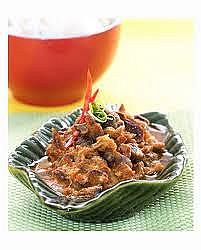

Sambal Ampela

Bahan di Haluskan:
- 5 buah cabai merah
- 1 buah tomat
- 7 buah bawang merah
- 1 sendok teh terasi
- 4 siung bawang putih
Bahan-bahan utama:
- 10 buah ampela ayam, cuci bersih, rebus, iris tipis
- 5 sendok makan minyak untuk menumis
- 300 gram kentang rendang, rebus
- 100 gram kapri muda
- 2 cm lengkuas, memarkan
- 100 ml santan dari ½ btr kelapa
- 2 lembar daun salam
- ½ sendok teh gula merah
- 2 buah cabai merah, buang biji, iris tipis
- 1 sendok teh garam
Cara Membuat :
- Tumis bumbu halus, daun salam, dan lengkuas sampai harum.
- Masukan ampela rebus dan kentang, aduk rata.
- Tambahkan garam, gula, dan santan, masak sampai matang.
- Menjelang diangkat, masukkan cabai merah dan kacang kapri muda, aduk sampai matang.